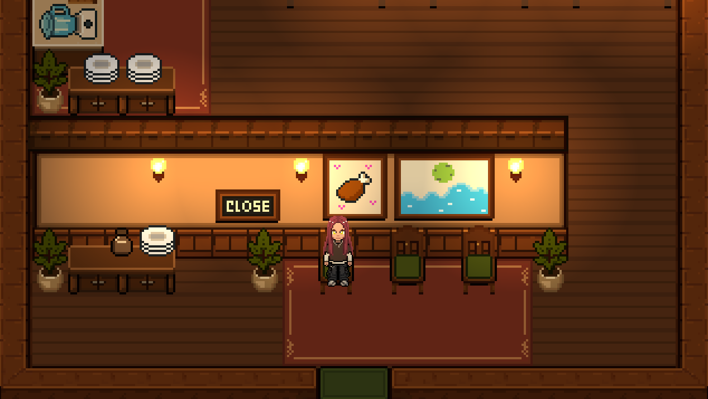

커뮤니티 제작 · Expo · Supabase · 웹
2026.11 · 개인 프로젝트 · AI 개발 도구 활용
MBTI와 일주(사주)가 같은 사람끼리 이야기하는 그룹형 커뮤니티 웹 앱을 Claude Code를 이용하여 기획부터 DB 설계, 테스트, CI까지 만들었습니다.
비슷한 서비스는 1:1 매칭이나 궁합 중심이었고, 같은 유형끼리 모여 이야기하는 곳은 비어 있다고 판단했습니다. 사용자가 적은 초기에 게시판이 비어 보이지 않도록 유형별이 아니라 토픽 기반 게시판으로 두고, MBTI와 일주는 뱃지와 필터로 얹었습니다.
- 역할
- 기획, 화면·DB 설계, 구현, 테스트, CI 구성을 모두 맡았습니다. Claude Code로 구현하되, 결정은 이유와 함께 문서로 남기는 규칙을 두었고 생성된 코드는 직접 읽고 테스트했습니다.
- 기술
-
React Native(Expo) 웹 앱, Supabase(PostgreSQL, 인증, 파일 저장소). DB 변경은 마이그레이션 파일로 관리합니다.
- Supabase를 고른 이유: 인증·DB·저장소가 한 서비스에 묶여 서버를 처음부터 만들지 않아도 되고, 무료로 시작할 수 있으며, 서울 리전을 지원해 개인정보의 국외 이전을 줄일 수 있어 선택했습니다.
- 일주는 오픈소스 라이브러리로 계산: 외부 계산 API는 가입자가 늘수록 비용이 같이 늘어서 제외
- 설계 판단
-
- 접근 제어를 DB 규칙(RLS)으로: 본인 글만 수정·삭제하고, 생년월일·성별은 공개 프로필과 표를 나눠 본인만 읽게 했습니다.
- 도배 방지(DB 트리거): 실제 커뮤니티 사례를 조사해 최소 간격, 새 계정 강화, 하루 한도 구조로 만들었습니다. 삭제한 글도 세어 "올리고 지우기"를 막습니다.
- 검색: 검색어를 매개변수로 받는 DB 함수, LIKE 특수문자 이스케이프, pg_trgm 인덱스
문제 해결 사례 2건
인기글이 최신 50개 안에서만 뽑히던 문제
- 문제
- 인기글을 앱에서 최신 글 50개를 받아 정렬해 뽑고 있어서, 전체 글이 아니라 50개 안에서만 뽑혔습니다.
- 원인
- 정렬과 개수 세기를 데이터가 있는 DB가 아니라 앱에서 하는 설계였습니다. 글이 늘수록 받아 오는 양도 늘어 낭비가 커집니다.
- 해결
- 좋아요 집계와 정렬을 DB 함수(popular_posts)로 옮겼습니다. 게시판, 기간, 개수를 매개변수로 받고, 서버 반영은 미리보기 → 적용 → 재확인 순서로 했습니다.
- 검증
- 가짜 데이터로 롤백 방식 SQL 테스트 5항목(삭제된 글 제외, 기간·게시판 필터, 개수 1~20 제한, 비로그인 차단)을 확인했고, 실행 후 가짜 데이터가 남지 않는 것도 확인했습니다.
블로그 ④ 피드와 글쓰기 ↗
DB가 저장을 막은 이유가 사용자에게 전달되지 않던 문제
- 문제
- 도배 방지나 길이 제한으로 DB가 저장을 거절해도, 앱은 모든 실패를 "글을 저장하지 못했어요" 하나로만 보여 줘서 사용자가 이유를 알 수 없었습니다.
- 해결
- DB가 던지는 정해진 값(rate_limited:interval | daily, 오류 코드 23514와 제약 이름)으로 오류를 구분했습니다.
- 결과
-
원인에 따라 다르게 안내됩니다. (단위 테스트 12개)
- 간격 제한 → "너무 빠르게 올리고 있어요. 잠시 후 다시 시도해주세요"
- 하루 한도 → "오늘 올릴 수 있는 만큼 모두 올렸어요. 내일 다시 시도해주세요"
- 제목 길이 초과 → "제목은 1~60자로 입력해주세요"
블로그 ⑤ 댓글, 좋아요, 신고 ↗
Nightshade Meadow · Godot 4 · PC 게임
2026.07 ~ 2026.10 · 개인 프로젝트 · AI 개발 도구 활용
기획부터 구현, 테스트, 빌드, itch.io 업로드까지 1인 개발로 진행한 힐링 × 호러 시뮬레이션 게임입니다.
위 "AI 개발 도구 활용"에 적은 통제·검증 방식으로 개발했습니다.

- 규모
- 시스템 기획서 16개, NPC 설정 13개, 맵 20개, 엔딩 3종, 씬 48개, GDScript 약 3만 줄
- 설계
-
- 데이터 주도 설계: NPC 대사, 이벤트, 상점, 레시피, 편지를 JSON으로 분리하고 이벤트 발생 조건(호감도, 날짜, 보유 아이템 등)도 데이터로 조합해, 코드 수정 없이 콘텐츠를 추가할 수 있게 했습니다.
- 이벤트 기반 호러 시스템: 살인·엔딩 로직은 한 파일(murder_manager.gd)이 맡고 화면 연출은 시그널로 분리했습니다. 시간·날짜 신호가 올 때만 조건을 검사하며, 엔딩 컷신 도중 종료해도 다음 접속 때 이어서 재생합니다.
문제 해결 사례 3건
로딩 직후 프레임 스파이크 개선
- 문제
- 맵 로딩 직후 처음 움직이면 잠깐 멈췄습니다.
- 원인
- NPC 스케줄 엔진이 첫 1분 틱에 모든 NPC의 이동시간을 미리 계산하면서, 눈에 보이지 않는 맵까지 텍스처째 렌더링하고 있었습니다(한 프레임에 최대 38회).
- 해결
- load_map()에 render 플래그를 추가했습니다. false면 충돌·길찾기 데이터만 만들고, 맵별 계산 결과도 캐싱했습니다.
- 결과
- 약 700ms → 85ms(약 88% 감소)로 줄었고, 반환값이 수정 전과 정확히 일치함을 확인했습니다.
타일 렌더링 구조 전환
- 문제
- 물 타일에 셰이더로 반짝임 효과를 넣자 게임이 버벅거렸습니다.
- 원인
- 타일이 개별 노드(Sprite2D)로 하나씩 따로 그려지고 있었습니다.
- 해결
- 20개 맵 전부 TileMapLayer로 전환했습니다. 맵 하나로 먼저 실험하고, 등록한 맵만 새 방식으로 그리고 나머지는 기존 방식을 그대로 써서 위험을 나눴습니다. 작업 전에는 커밋으로 롤백 지점을 만들어 두었습니다.
- 결과
- 타일 ID와 칸 좌표가 두 방식에서 1:1로 일치했고, 충돌 판정 불일치는 0건이었습니다.
UI 창을 닫은 뒤 클릭이 먹히지 않는 문제
- 문제
- UI 창을 닫았는데도 화면 클릭이 먹히지 않는 문제가 여러 화면에서 반복됐습니다.
- 원인
- 닫힌 화면의 보이지 않는 UI가 mouse_filter 기본값(STOP)으로 남아 클릭을 가로챘습니다. 이 처리 함수를 화면마다 복사해 두다 보니 화면마다 빠지거나 다르게 되어 있어 같은 버그가 재발했습니다.
- 해결
- 28개 화면에 복사돼 있던 처리 함수를 공통 유틸리티 함수 하나로 통합해, 새 창을 추가해도 같은 실수가 반복되지 않는 구조로 바꿨습니다.
- 결과
- 코드를 합치기 전과 후에 모든 UI의 클릭 설정값을 기록해 비교했고, 달라진 곳이 없음을 확인했습니다(회귀 테스트).